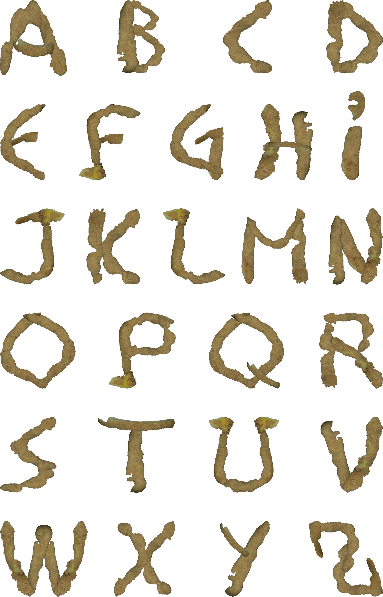
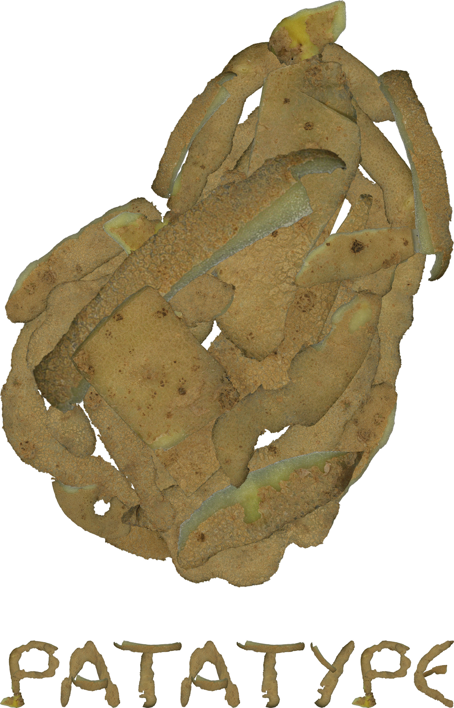
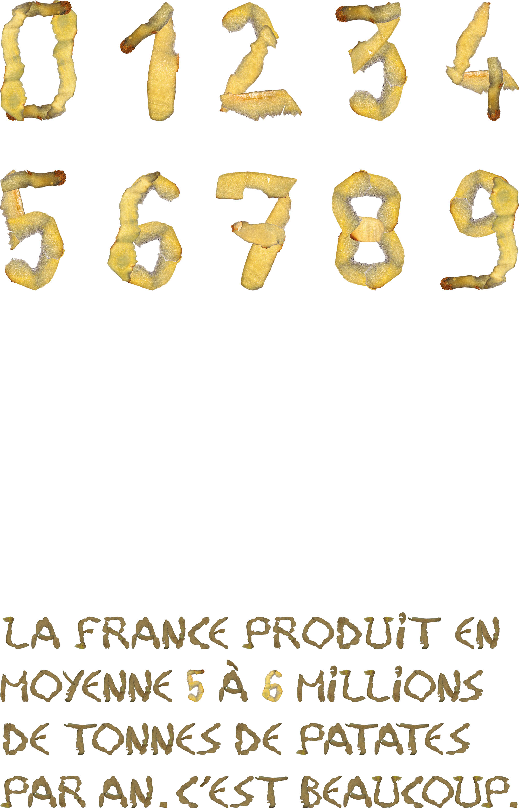
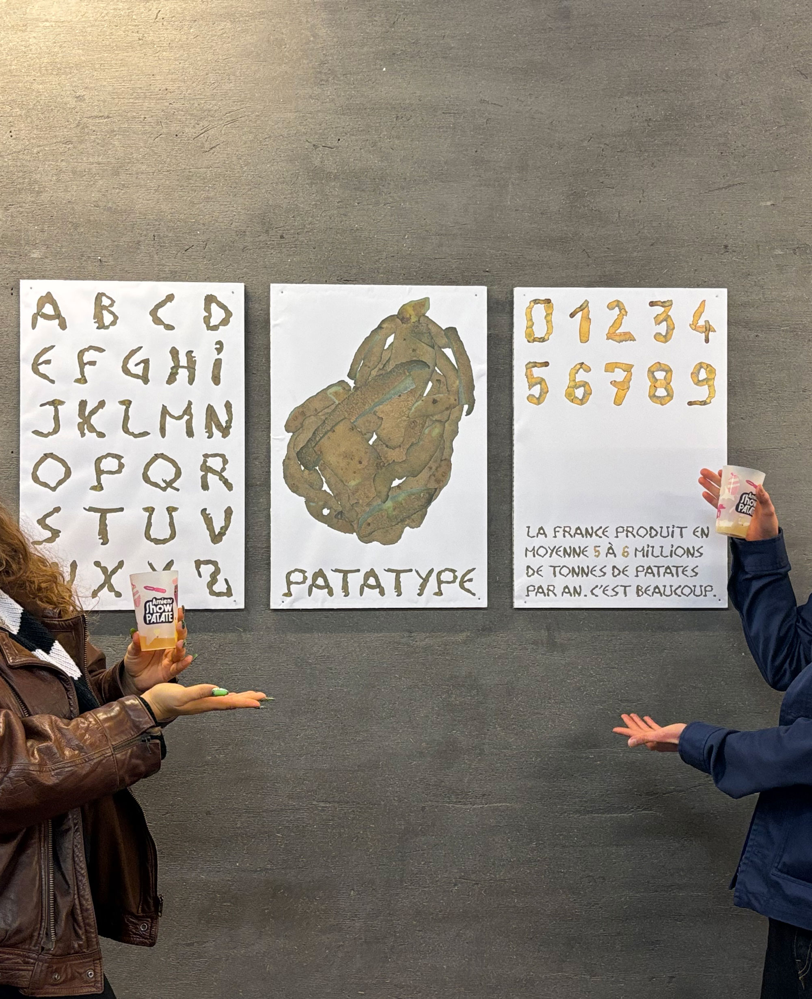

PATATYPE
PATATYPE
Dans le cadre du mois de l'alimentation et du Amiens Show Patate à Amiens, les étudiant•e•s de 2ème année de DNA de l'ÉSAD d'Amiens ont dû travailler avec la pomme de terre comme matériau lors de deux jours de workshop. Le projet initial était de concevoir des leporellos sur les états de la patate, ainsi que des monogrammes en 3D taillés dans les aliments.
Dans un souci d'éco-responsabilité, nous avons décidé en duo avec ma camarade Galatée Garat-Balta d'utiliser les pelures de pomme de terre laissées par les étudiant•e•s pour concevoir un caractère typographique baptisé « Patatype ».
Les projets ont été exposés à l'office de tourisme d'Amiens, exposition dont nous avons également conçus les cartels en binôme.




Spécimen 400 x 600 mm
Projet ÉSAD